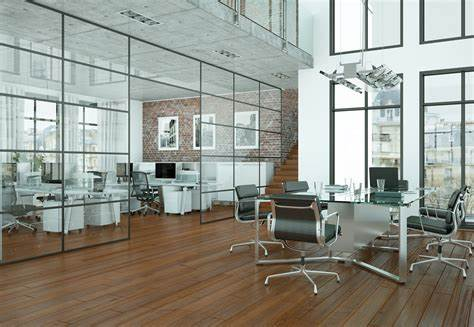

JOB BOARD
Post the Job for your juniors
Why post Job
description,
you can access a pool of qualified candidates who are familiar with the college's culture and values.
Posting job listings on a college's website can create mutually beneficial relationships between alumni, students, and the college.
The college's website can become a hub for job postings and career resources, which can increase the visibility and reputation of the college.

JOB ENTRY
Enter the following information
From College desk
We consider our alumni to be our assets and ambassadors and we are constantly exploring new ways of engaging with alumni across the world. The trend of alumni giving back to the alma mater has seen a rise in the last few years, and this is largely on account of a vibrant and engaged alumni network,
Other pages
-
 Re-union
Re-union
-
 Home-coming
Home-coming
-
Networking
<